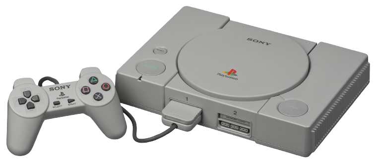

Tudo começou lá atrás, em 1995, com o lançamento do primeiro PlayStation, ou PSOne. O console tinha design elegante e seus jogos rodavam por meio de CDs, o que permitia processamento em 3D e som melhorado. O PSOne vendeu, em uma década, mais de 100 milhões de unidades no mundo. Para falar sobre a história do PlayStation, nós temos que conversar também sobre a parceria entre Sony e Nintendo. Muitos jogadores não têm conhecimento deste fato, mas as duas gigantes já trabalharam juntas no ramo dos videogames, o que fez também com que a rivalidade surgisse após a parceria acabar dando errado. Mas vamos do início. No final de 1980, Ken Kutaragi, que depois se tornaria o criador do PlayStation, foi o responsável por projetar o SPC-700, que era o chip de som do Super Nintendo (SNES). Com a intenção de continuar com a parceria e se envolver ainda mais neste meio, a Sony resolveu desenvolver um periférico de leitor de CD para o console da Big N. Podendo chegar até 700 MB, o Compact Disk (CD) desenvolvido pela Sony era incrivelmente superior aos cartuchos que dominavam o mercado na época e chegavam a apenas 6 MB. A criação revolucionária da Sony chamou a atenção da Nintendo, que quis firmar uma parceria para conseguir bater de frente com Mega CD da Sega e PC Engine da NEC, mantendo-se assim na liderança da indústria. Já para a Sony, que era soberana no setor de eletrônicos, embarcar na área dos consoles era uma oportunidade muito interessante. O SNES-CD havia começado uma parceria promissora.
Após o fim da parceria com a Nintendo, a Sony obviamente ainda tinha a intenção de tornar-se um nome forte na indústria dos videogames. Com a intenção de permanecer neste mercado, a empresa chegou a ensaiar outra parceria com um grande nome da época: Sega. Sony e Sega (da América) estavam de acordo sobre produzir um novo console juntas. Os prejuízos com o console seriam divididos entre as duas empresas, assim como cada uma ficaria com que ganhassem com o software. Porém, Hayao Nakayama, presidente da Sega (matriz), não permitiu que o projeto fosse realmente realizado. Na época, Nakayama afirmou que a ideia era estúpida, além de garantir que a Sony não sabia desenvolver Software nem Hardware. O problema para Nakayama, é que ele não imaginava que pouco tempo depois um console da Sony iria "bater" sem piedade em Saturn, console que veio a ser lançado pela Sega.